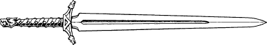

50
Ardan and Rimoah are honoured that you have chosen to take this sword which they have spent many months creating. (Record this sword, Skarn-Ska, on your Action Chart as a Special Item. When used in combat it will add 5 points to your COMBAT SKILL. This sword possesses other attributes which will be revealed when it is used in combat.)
You take hold of Skarn-Ska and essay a few strokes in the air to gauge its weight and balance. It does not take you too long to discover that this is an exceptionally fine blade. You feel your spirits rise, for now you possess at least one effective weapon against the horrors that may be encountered on your quest for the Moonstone.
{kind=link}

‘We are delighted that you approve of Skarn-Ska, Grand Master,’ says Rimoah, ‘but you must be sure to use it with discretion. It has magical properties which give off a strong and goodly aura. In Naar’s domain these radiant energies could attract the unwanted attentions of those who dwell therein.’
Lord Ardan picks up a seemingly plain leather scabbard from the table and offers it to you.
‘Here, Grand Master. I urge that you sheathe Skarn-Ska with this. It is woven from strands of pure korlinium and it will keep hidden the blade’s true power from Naar’s foul spawn.’
You accept the scabbard from Ardan and affix it to your belt. (Record this Korlinium Scabbard on your Action Chart as a Special Item.)
‘The scabbard will shield your blade, Grand Master,’ comments Lord Rimoah, ‘but what of yourself? You are imbued with Kai powers that may readily be detected. There is a danger that your natural skills could alert Naar’s minions to your presence among them.’
If you possess a Platinum Amulet, turn to 180.
If you do not possess this Special Item, turn to 296.